AUTOMATIC TRANSMISSION
- Path
- Descriptions > 21 GEARBOX > AUTOMATIC TRANSMISSION
- Kind
- system description
- Applies to
- engines: 2.4 20V, 3.0 V6, 3.2 V6, 2.4 JTD 20V; all production periods
- Interactive page
- https://sloeber94.github.io/elrnDB-lThss/en/#/202206
Applies to: all engines; all production periods
SPECIFICATIONS OF THE 55-50 SN AUTOMATIC TRANSMISSION
Five speed compact automatic transmission with front wheel drive
The 55-50 SN automatic transmission has a five speed gearbox with a new epicyclic gear train added to the four speed automatic gearbox, maintaining the same overall length and the same distance between the axles. It is also more compact and has a greater capacity compared with the transmission fitted on conventional vehicles. The 55-50 SN weighs only six kilos more than the four speed automatic transmission.
55-50 SN | 50-40 LE | |
Epicyclic gear train | 4 | 3 |
Weight | About 90 kg | About 84 kg |
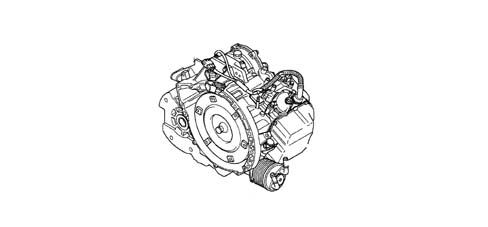
Addition of new functions
Adoption of active speed sensor (NT - 6): Both the input and the output speed sensors have been replaced by active sensors.
The accumulator has been abandoned (excluding C1) and the SLS adopted: the very new SLS (pressure control solenoid during gear changes) has been adopted to electrically regulate the pressure and avoid the use of the accumulator thereby producing a softer gear change. The gear change from second to third and from third to fourth is made "from clutch to clutch" thereby avoiding the use of the traditional clutch.
Adoption of TIP gear change control (NT - 14): the TIP gear change control makes it possible to select the gear that the driver wishes to engage simply by operating the +/- gear lever.
Addition of the slipping control (NT - 15) and modification of the lock-up clutch solenoid: by adding the slipping of the lock-up clutch, the operating area of the lock-up clutch has been extended, thereby improving fuel consumption. (A special fluid is required for the automatic transmission: JWS-3309). The lock-up clutch solenoid has been transformed into a linear type (SLU).
Adoption of the N control (NT - 16): when the vehicle is stopped by braking, the automatic transmission is automatically positioned in neutral and not in "D", thereby improving fuel consumption.
Adoption of built in oil cooling device
The adoption of the integrated fluid cooling device offers the following advantages:
- Reduction in the number of parts on the vehicle (thanks to the simplification of the cooling circuit).
- Stabilization of the fluid level by adopting a differential unit supplied together with the automatic transmission fluid.
- Possibility of controlling the temperature of the automatic transmission fluid.
- Improved reliability, in terms of fluid leaks, thanks to the automatic transmission having no fluid circuit.
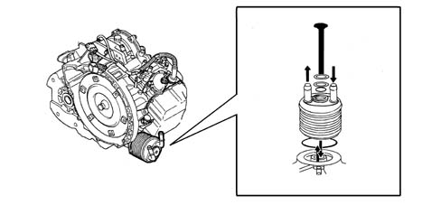
ELECTRONIC CONTROL SYSTEM (CONTROL MODULE FOR TRANSMISSION AND ELECTRONIC COMPONENTS)
Specifications
The C.A.E. fitted on this vehicle represents an important innovation from the user's point of view because of the major technological developments involved.
In effect, in addition to the sophistication of the electronic control which governs the gear change strategies adapting to the style of the driver, there is the new TIP sequential alternative which allows the driver to use the vehicle in totally assisted conditions as found on conventional automatic transmissions and in manual gear change conditions with the TIP function where the intervention of the automatic function is limited to prevent incorrect or potentially damaging manoeuvres for the vehicle mechanics (the gearbox does not, for example, accept selections that would cause beyond rev conditions).
The 5 speed Aisin type gearbox, with adaptive electronic control, with dual operating possibilities (Full Auto and Trip) is controlled by means of a double control grid for the gear lever positions.
The electronic control mode adopted is the adaptive type, which means that the electronic management of the gear change is capable of analyzing the vehicle driving conditions and, after having compared them with the standard conditions memorized in its software, of selecting the operating programme (gear change law) that is best adapted to the current situation (see NCA [DF_5500]).
The system manages the following three gear change laws:
- Up hill: when driving uphill, the control unit compares the actual acceleration of the vehicle with the theoretical acceleration on a flat road, thereby determining the gradient of the road. It selects the change law and the most suitable ratio according to the gradient.
- Down hill: when the control unit detects that the vehicle is accelerating with the throttle closed (descent) and is capable of estimating that by changing down a gear the vehicle will no longer be accelerating, it changes down a gear the first time the brake is operated.
Fast acceleration: depending on the speed with which the accelerator pedal is depressed, the control unit modifies the gear change and kick-down law.
The CAE electronic control unit manages the operation of the automatic transmission through connection with:
- the sensors/actuators fitted on the gearbox for acquiring the operating conditions and the operation of the clutches and brakes;
- the injection/ignition control unit for the exchange of information relating to the engine;
- the instrument panel for displaying the operating conditions.
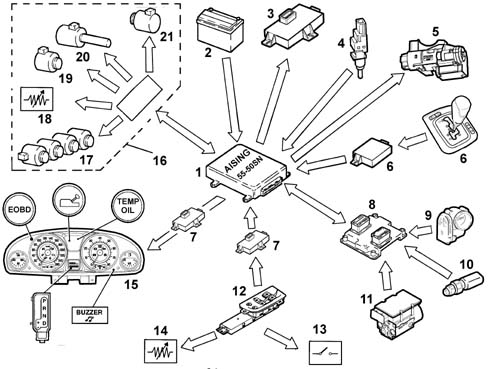
- 1 - CAE node.
- 2 - Battery.
- 3 - Diagnotic socket.
- 4 - Brake pedal switch.
- 5 - Ignition key extraction release control (key-lock).
- 6 - Automatic transmission gear selector node.
- 7 - Body Computer.
- 8 - Injection-ignition control unit / CAN line.
- 9 - Throttle body built into DVE
- 10 - Coolant temperature sensor.
- 11 - Brake Node (NFR).
- 12 - Driver's Door Node (NPG).
- 13 - Driver's door switch.
- 14 - Outside air temperature sensor (inside the left rear view mirror).
- 15 - Instrument panel (signalling for gear selector (active matrix display), automatic transmission failure, EOBD failure (warning light), buzzer, automatic transmission fluid overheating (in the display)).
- 16 - Solenoid valve group (CAE).
- 17 - Gear engagement solenoid valves (S1, S2, S3, S4, S5).
- 18 - Gearbox oil temperature sensor.
- 19 - Lock-up clutch solenoid valve (SLU).
- 20 - Pressure control solenoid valve (STS).
- 21 - Linear pressure control solenoid valve (SLT).
ELECTRONIC COMPONENTS
Switch for starting in neutral (NSW)
The switch for starting in neutral indicates the automatic transmission ratio, at a given time, to the starter motor, the reversing light and the automatic transmission control unit.
The switch for starting in neutral can only start the engine in "P" and in "N" (to prevent reckless driving).
The switch for starting in neutral ensures that the reversing light comes on when reverse gear is engaged.
The switch for starting in neutral can also be used to control the gear change.
The switch for starting in neutral transmits information, making use of the circuit for the starter motor and the vehicle side reversing light directly, without going from the automatic transmission control unit.
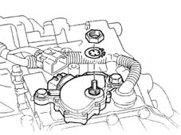
Gearbox solenoids 1, 2, 3, 4, 5 (S1, S2, S3, S4, S5)
The five gearbox solenoids are fitted directly on the valve casing. The solenoids can be in the ON or OFF position, depending on the control signal arriving from the automatic transmission control unit. The combined action of the five solenoids 1, 2, 3, 4, 5 (S1, S2, S3, S4, S5) makes it possible to change the gear ratios.
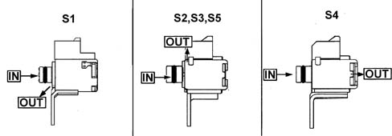
Input and output speed sensor (active sensors)
The output speed sensor detects the speed of the vehicle from the number of revs of the parking gear, whilst the input speed sensor detects the input speed for the automatic transmission from the number of revs of the drum C1: both then send a signal to the automatic transmission control unit.
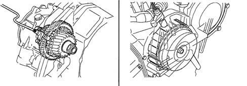
Differences between active sensor and impulse sensor
Active sensor specifications:
- this sensor has an integrated Hall circuit that manages the rectangular wave signal producing energy and transmitting the signal to the automatic transmission control unit exploiting the Hall effect. The automatic transmission control unit recognizes the signal in relation to the speed of the vehicle. The specifications of the output signal are fixed and do not therefore depend on the number of revs.
- strong signal for noise
- there may also be a low number of revs (10 rpm).
Impulse sensor specifications:
- as a result of the rotation of the gear, a sinusoidal wave with an induction electro-motive force is produced, in relation to the speed of the vehicle, which is then sent to the automatic transmission control unit. The control unit converts the wave signal into an impulse signal and recognizes it in relation to the speed of the vehicle. The specifications of the output signal depend on the number of revs.
- the minimum number of revs that can be detected is 50 rpm.
Oil temperature sensor
The oil temperature sensor is fitted directly on the valve casing which converts the temperature of the oil inside the automatic transmission into an electrical signal which is then sent to the automatic transmission control unit.
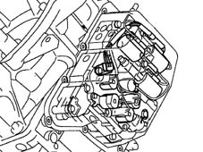
Linear pressure control solenoid (SLT)
The linear pressure control solenoid controls the throttle valve by means of a signal arriving from the automatic transmission control unit in addition to the linear pressure of the clutch and the brake to reduce the shock from the gear change.
Direct control.
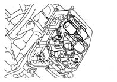
Lock-up clutch control solenoid (SLU)
The lock-up clutch control solenoid controls the linear pressure of the lock-clutch by means of the signal arriving from the automatic transmission control unit in addition to the hydraulic pressure of the lock-up clutch to reduce the shock from the gear change.
Direct control:
- Engine brake: Brake B3
- Control of neutral (N): Brake B2.
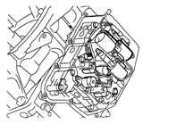
Gearbox pressure control solenoid (SLS)
The gearbox pressure control solenoid operates through a signal arriving from the automatic transmission control unit.
Direct control:
- control of 2nd, 3rd, 4th speeds and neutral (N): brake B1
- control of 5th speed and reverse gear: clutch C2
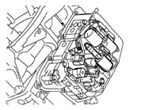
Transmission drive gear
The switch and sensor assembly, fitted on the automatic transmission, connects the switch for starting in neutral, the solenoids 1, 2, 3, 4, 5 (S1, S2, S3, S4, S5), the input speed sensor and the oil temperature sensor to three terminals.
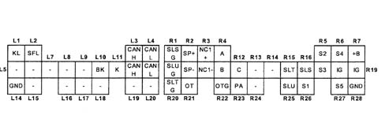
- L1 - Key lock solenoid.
- L2 - Gearbox lock solenoid.
- L3 - Communication signal with the CAN (high).
- L4 - Communication signal with the CAN (low).
- L5 - Open.
- L6 - Open.
- L7 - Open.
- L8 - Open.
- L9 - Open.
- L10 - Signal from brake switch.
- L11 - Signal from diagnostic line (K line).
- L12 - Communication signal with the CAN (high).
- L13 - Communication signal with the CAN (low).
- L14 - Earth (-).
- L15 - Open.
- L16 - Open.
- L17 - Open.
- L18 - Open.
- L19 - Open.
- L20 - Open.
- R1 - Clutch linear pressure control solenoid (-).
- R2 - Output speed sensor (+).
- R3 - Input speed sensor (+).
- R4 - Signal "A" (switch for starting in neutral).
- R5 - Gearbox solenoid n° 2.
- R6 - Gearbox solenoid n° 4.
- R7 - Positive from battery.
- R8 - Lock-up clutch linear solenoid (-).
- R9 - Output speed sensor (-).
- R10 - Input speed sensor (-).
- R11 - Signal "B" (switch for starting in neutral).
- R12 - Signal "C" (switch for starting in neutral).
- R13 - Open.
- R14 - Open.
- R15 - Throttle valve linear solenoid (+).
- R16 - Clutch pressure linear control solenoid (+).
- R17 - Gearbox solenoid n° 3.
- R18 - Ignition switch.
- R19 - Ignition switch.
- R19 - Ignition switch.
- R20 - Throttle valve linear solenoid (-).
- R21 - Oil temperature sensor (+).
- R22 - Oil temperature sensor (-).
- R23 - Signal "PA" (switch for starting in neutral).
- R24 - Open.
- R25 - Lock-up clutch linear solenoid (-).
- R26 - Gearbox solenoid n° 1.
- R27 - Linear solenoid n° 5.
- R28 - Earth (-).
Automatic transmission control unit control functions
Control of the gear change and the lock-up clutch.
According to the gear change programmed, the control unit sends a signal to solenoids S1, S2, S3, S4 and S5, which are in the on/off position, to control the gear change in relation to the speed of the vehicle and the throttle valve opening.
The 55-50SN version does not have different driving modes available for the driver to select. It is basically programmed for the "economy" mode, but the automatic gear change control unit can automatically change to different programmes depending on specific circumstances.
Adaptive control of gear change by the driver (Economy, Regular and Sports modes)
The Economy mode is used in normal driving conditions after having turned the ignition on and the driver's wishes are ascertained by using a logic that depends on the operation of the accelerator pedal. This makes it possible to change modes and move from Economy mode (low speed) to Regular mode (average speed) or Sports mode (high speed) according to the driver's wishes.
Uphill modes 1, 2
When the control unit detects that the vehicle is driving uphill from the engine torque and deceleration conditions, it alters the gear change strategy in relation to the gradient of the incline and avoids overloading the automatic transmission with gear changes.
Downhill mode
When the control unit detects that the vehicle is driving downhill, from the increased acceleration with the accelerator completely closed, it intervenes gently on the brake changing the gear change points at high speed.
Fast control in ON position
This control anticipates the desire of the driver to accelerate thanks to the operation of the accelerator changing down a gear only reviewing the gear change points.
Fast control in OFF position
This control anticipates the desire of the driver to decelerate thanks to the operation of the accelerator using the engine brake preventing a change to a higher gear.
Brake assistance control
This control anticipates the desire of the driver to decelerate thanks to the operation of the accelerator using the engine brake positively reviewing the gear change points at high speed.
Driving control round bends
This control evaluates the vehicle driving conditions round bends from the difference between the RL speed signal and the RR speed signal of the ABS, preventing a shift to higher gears, thereby ensuring the stability of the vehicle round bends.
WUSP (Warm Up Shift Pattern)
This mode warms up the engine, establishing the gear change points at a vehicle speed that is slightly higher that when the engine is cold.
ACC (Adaptative Cruise Control)
By modifying the gear change points, this mode prevents acceleration and gear changes.
Control of too high oil temperature
When the temperature of the oil is too high, the control unit automatically modifies the gear change arrangements. As a result, driveability is improved in low gears. In addition, the temperature of the oil and the water when decreasing, activate the lock-up clutch.
VDC (Vehicle Dynamic Control)
In the case of a slippery road, this mode maintains the gear engaged requiring a maintenance signal for the gear from the VDC computer and ensuring the manoeuvrability of the vehicle preventing first gear from being engaged.
Low load control %mgr;
This mode improves traction performance starting in third gear when wishing to leave roads wth a low %mgr; (grip coefficient) or with ruts.
TIP gear change control (manual mode)
The driver can select the gear they prefer taking advantage of sports driving simply by moving the gear lever from "D" using the MAN+ or MAN- button. The control of the lock-up clutch is activated automatically. The control of the gear change is activated again moving from manual driving to "D".
Below is a list of the TIP mode active controls.
Authorization for shifting to higher gears
This control is activated provided that the vehicle speed exceeds the figures shown in the table below. The vehicle can start in second or in third even from stationary.
Y-563 (841) | |||
|---|---|---|---|
Throttle valve opening | 0% | 20% | More than 30% |
From 1st to 2nd | More than 0 km/h | More than 0 km/h | More than 16 km/h |
From 2nd to 3rd | More than 0 km/h | More than 0 km/h | More than 28 km/h |
From 3rd to 4th | More than 33 km/h | More than 33 km/h | More than 54 km/h |
From 4th to 5th | More than 38 km/h | More than 38 km/h | More than 71 km/h |
Authorization for shifting to lower gears
This control is activated to prevent the engine going outside of the rev range, provided that the speed of the vehicle does not exceed the figures given in the table below.
Y-563 (841) | |
|---|---|
From 2nd to 1st | Less than 59 km/h |
From 3rd to 2nd | Less than 104 km/h |
From 4th to 3rd | Less than 160 km/h |
From 5th to 4th | Less than 236 km/h |
Automatic shift to lower gears
This control is activated automatically according to the speeds shown in the table below.
Y-563 (841) | |
|---|---|
From 2nd to 1st | Less than 2 km/h |
From 3rd to 2nd | Less than 25 km/h |
From 4th to 3rd | Less than 30 km/h |
From 5th to 4th | Less than 35 km/h |
Authorization to shift to higher gears (if the temperature of the oil is high)
This control is activated if the temperature of the oil is high, provided that the vehicle speed exceeds the figures shown in the table below. The vehicle can start in second or in third even from stationary.
Y-563 (841) If the temperature of the oil is high | |||
|---|---|---|---|
Throttle valve opening | 0% | 20% | More than 30% |
From 1st to 2nd | More than 0 km/h | More than 0 km/h | More than 16 km/h |
From 2nd to 3rd | More than 0 km/h | More than 0 km/h | More than 28 km/h |
From 3rd to 4th | More than 77 km/h | More than 77 km/h | More than 81 km/h |
From 4th to 5th | More than 112 km/h | More than 112 km/h | More than 131 km/h |
Authorization to shift to lower gears (if the temperature of the oil is high)
If the temperature of the oil is high, this control is activated and there is a shift to a lower gear to prevent the engine going beyond the rev range. The speed of the vehicle should not exceed the figures shown in the table below.
Y-563 (841) (if the temperature of the oil is high) | |
|---|---|
From 2nd to 1st | Less than 2 km/h |
From 3rd to 2nd | Less than 21 km/h |
From 4th to 3rd | Less than 55 km/h |
From 5th to 4th | Less than 88 km/h |
Lock-up clutch slipping control
Slight slipping of the lock-up clutch in the release area makes it possible to extend the engagement area of the lock-up clutch at low speed, controlling the engine speed and thereby producing greater transmission efficiency and improved fuel economy.
Lock-up clutch deactivation control
This control deactivates the lock-up clutch, when shifting to a lower gear or when the engine is idling, to prevent the engine from stalling, by pressing the brake pedal at low speed.
Neutral control
When the vehicle is stopped, the automatic transmission automatically positions itself in neutral as the clutch is released, inspite of the forward gears ratio. This control makes it possible to reduce the engine load and the slipping of the torque converter, improving fuel consumption and keeping vibrations to a minimum. When the vehicle sets off, after having pressed the accelerator pedal, the clutch is engaged and the gearbox engages first speed.
If the vehicle stops uphill, there is no force due to the viscous sliding as a result of the neutral conditions set by the neutral control (N). Therefore the automatic transmission control unit operates the brkes to maintain a force equivalent to the force due to the viscous sliding.
If the control unit detects a steep incline thanks to the decrease in acceleration, the neutral control is not activated.
The automatic transmission control unit activates each linear solenoid independently of the others in the case of a neutral control:
- the SLT solenoid controls the C1 clutch directly.
- the SLS solenoid controls the B1 brake directly.
- the SLU solenoid controls the B2 brake directly.
In impulse mode, the automatic transmission control unit does not activate the neutral control.
The neutral control involves the following three processes:
- release of the clutch.
- clutch in neutral (keep in neutral).
- application of pressure.
Release of the clutch
The automatic transmission control unit detects that the vehicle has stopped as a result of the change in the number of revs for the clutch and sends an OFF signal to solenoid S2. The pressure of the clutch is released and the clutch releases gently. The control unit activates the hill hold function operating the brakes gently.
The automatic transmission control unit re-examines the clutch piston travel through its release time.
Clutch in neutral
The automatic transmission control unit maintains the neutral condition activating the clutch through the SLT solenoid, brake B1 with the SLS solenoid and brake B2 with the SLU solenoid. This operation reduces the clutch load and allows the vehicle to be started gently engaging the clutch again.
Applying pressure to the clutch
The automatic transmission control unit applies pressure gently, ensuring that the clutch engages when the brake pedal is released. The automatic transmission control unit also releases the pressure at brakes B1 and B2 gently and cancels the hill hold function.
Gear shift learning control
This control learns the pressure of the clutch and the brake to reduce the shock from the gear change (shift to a higher gear, shift to a lower gear, manual shift to a lower gear, shift to a lower gear from neutral).
Learning method:
- 65° C = < oil temperature < 110° C.
- Constant slight opening of the throttle valve (20-30%)
- gear change interval (about 3 seconds)
- repeat every gear change about 10 times.
Control of shift from N to D
This control improves the quality of the gear change from N to D by activating the SLT solenoid in relation to the travel of piston C1 learnt during the learning procedure for the change from N to D and thanks to the application of improved hydraulic pressure to the C1 clutch during the change from N to D.
Gear change learning control from N to D
This control learns the hydraulic pressure C1 monitoring the engagement time of the C1 clutch and the change in the actual number of revs.
(1) 550 rpm = < engine speed < 1200 rpm |
(2) 65° C = < oil temperature < 110° C. |
(3) 500 rpm = < C1 rpm C1 < 1200 rpm |
(4) throttle valve opening < 3.0% |
Learning method:
- If the conditions listed above are verified.
- If the gear change interval is more than 3 seconds.
- Repeat the change from N to D about 10 times.
Control of change from N to R
This control improves the quality of the gear change from N to R by activating the SLS solenoid in relation to the travel of piston C2 learnt during the learning procedure for the change from N to R and thanks to the application of improved hydraulic pressure to the C2 clutch during the change from N to R.
Gear change learning control from N to R
- This control learns the hydraulic pressure C2 monitoring the engagement time of the C2 clutch and the change in the actual number of revs.
(1) 550 rpm = < engine speed < 1200 rpm |
(2) 65° C = < oil temperature < 110° C. |
(3) 500 rpm = < C1 rpm C1 < 1200 rpm |
(4) throttle valve opening < 3.0% |
Learning method:
- If the conditions listed above are verified.
- If the gear change interval is more than 3 seconds.
- Repeat the change from N to R about 10 times.
Torque reduction
This control improves the quality of the gear change sending a torque reduction request signal, from the automatic transmission, to the electronic control unit thereby reducing the drive torque during the shift from N to D and from N to R, as well as from 1st to 2nd, 3rd, 4th, 5th and viceversa.
If the accelerator pedal is pressed rapidly, this control establishes the maximum limit for the engine torque thereby preventing the engine from going beyond the rev range during the shift from 2nd to 3rd and from 3rd to 4th and viceversa and during the shift from 4th to 2nd "from clutch to clutch".
Diagnosis
This function continuously monitors the operation of the sensors, the solenoids and the other electronic components.
If there is a fault, the warning light in the instrument panel comes on notifying the driver of the poor operation of the automatic transmission (on board fault diagnosis).
It is only possible to locate the fault and cancel the error code and the learning value during the fault diagnosis using the FIAT tester.
Control learning method
The control learning method consists of 3 steps.
1) Warming up the engine: the temperature of the automatic transmission fluid must reach 65 - 110° C keeping the engine idling or in town driving conditions. Check the temperature using the diagnostic equipment.
2) Learning of the control for the shift from N to D or from N to R: keep the vehicle stationary applying the brake. Change from N to R and keep R engaged for more than 3 seconds, then return to N. Repeat the gear change from N to R and the one from N to D five times.
3) Learning the control for shifting to a higher or lower gear: accelerate until 50 km/h is reached in 5th with a throttle opening of 15-20% in "D". Decelerate applying the brake until the vehicle stops. (More than 14 seconds must elapse between the start of the deceleration and the stopping). Repeat the procedure ten times.
Hydraulic control system
On the basis of the hydraulic pressure produced by the oil pump, the control unit sends a signal to the solenoid and the hydraulic control system manages the hydraulic pressure acting on the torque converter, the epicyclic gear train, the clutches and the brakes in relation to the specifications listed below.
Specifcations
Automatic transmission type | 55-50 SN | ||
Design number | Y ¿ 563 | ||
Vehicle | LANCIA 841 | ||
Automatic transmission category number | 4675215 (30510-55C006) | ||
Automatic transmission control unit category number | 4675213 (89530-55°020) | ||
Sliding control | Device | ||
Neutral control | Device | ||
Geartronic control | Device | ||
Engine model | V6-3.0 L PETROL | ||
Stall rpm | 2730 rpm | ||
Gear ratio | 1^ | 4,685 | |
2^ | 2,942 | ||
3^ | 1,923 | ||
4^ | 1,301 | ||
5^ | 1 | ||
Reverse gear | 3,177 | ||
Differential | 2,44 | ||
Counter-balance gear | 1,018 | ||
Solenoids | Gearbox solenoid | Five solenoids: S1, S2, S3, S4, S5 | |
Linear solenoid | Three solenoids: SLT, SLS, SLU | ||
Automatic transmission fluid | AW | JWS-3309 (T-IV) | |
FIAT | JWS-3309 | ||
Linear pressure Mpa (kgf/cm 2) | Engine idling | D | 0,36 (3,6) |
R | 0,56 (5,6) | ||
Engine stalled | D | 1,34 (13,4) | |
R | 1,85 (18,5) | ||